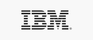
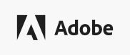
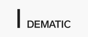
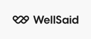
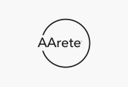
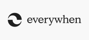
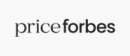

Tell a story that resonates with your audiences. Get close enough to make them listen.
We’re experts in brand strategy, but we don’t stop there; our specialist teams follow through with AI consultancy, content and design development, and digital experience.
Brand strategy and identity
Establish a foundation with insights and ideas that elevate your promise.
Content and campaign strategy
Tell your brand story and build a rapport with the right people at the right time.
Copywriting and brand voice
Turn complexity into clarity with creative messaging that captures your unique voice.
Brand design and application
Bring creative ideas to life with meaningful experiences and well-crafted design.
Digital development
Create beautiful digital experiences across platforms, throughout the brand journey.
Account-based marketing
Grow your relationships, reputation and revenue with targeted campaigns and toolkits.
Research and insights
Create authentic connections built on audience segmentation and market research.
Media activation
Maximise media opportunities to get the engagement your campaign deserves.
AI experiences
Enhance your brand and cut through with interactions that meet real human needs.
Brand Proximity
Take advantage of disruptive tools to get closer to the people who matter.
Let’s talk about your brand →We’ve crafted meaningful work for some of the world’s biggest B2B brands.





